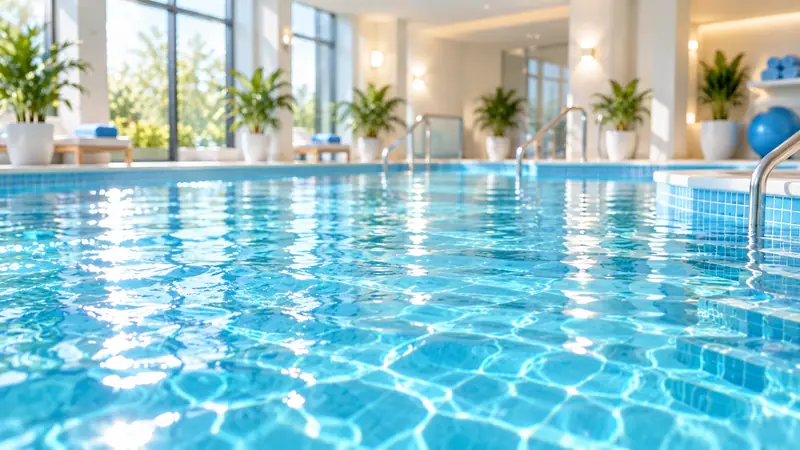

הבריכות ואיכות המים במרכז עדן
סביבת מים איכותית, נקייה ומבוקרת היא חלק בלתי נפרד מהחוויה ומהמקצועיות של המרכז.
בריכות שנועדו לפעילות טיפולית ושחייה
הבריכות במרכז עדן מיועדות לפעילות טיפולית, שחייה ועבודה בקבוצות קטנות. המבנה והאווירה מאפשרים לצוות לעבוד בצורה רגועה, אישית וממוקדת, תוך שמירה על נוחות המשתתפים והמשפחות.
איכות מים, ניקיון ותחזוקה
אנו מקפידים על טיפול שוטף במים ובמערכות הבריכה, ניקיון מוקפד, תחזוקה רציפה ובקרה לאורך הפעילות. המטרה היא לשמור על סביבת מים נעימה ואיכותית בכל שעות הפעילות.
הקפדה על דרישות משרד הבריאות
הפעלת הבריכות נעשית תוך הקפדה על הדרישות וההנחיות הרלוונטיות של משרד הבריאות בנושאי איכות מים, תחזוקה, ניקיון ובקרה. עבורנו זה אינו רק עניין טכני, אלא חלק מהאחריות שלנו כלפי הילדים, ההורים והמטופלים.
למה זה חשוב
כאשר ילד, נער או מבוגר מגיע לפעילות במים, תחושת הביטחון מתחילה עוד לפני המפגש עם המטפל. טמפרטורה נעימה, סביבה מסודרת, איכות המים ורמת התחזוקה משפיעות על הנוחות ועל היכולת להתרכז בתהליך עצמו.
לתיאום ביקור ושיחת התאמה
הבריכה היא חלק מהאיכות
במרכז עדן סביבת המים היא חלק בלתי נפרד מהשירות. אנחנו מקפידים על תחזוקה, ניקיון, בקרה ואיכות מים בהתאם להנחיות משרד הבריאות ולדרישות הרלוונטיות.